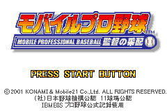

Mobile Pro Yakyuu - Kantoku no Saihai (Japan)
Flash 512K
Cartridge Identity
- Game Code
AMBJ(FamilyAMB)- Header Title
MB BASEBALL- Maker / Revision
A4/ rev0- ROM Size
- 8.0 MiB (8,388,608 B)
- Save Media
Flash 512K- SHA-256
184ce017a6e62989cbf7a68b25c5da3b564e543db61a3f24876a86c1b7068aaf- Engine / SDK Group
comm-002(145 families)
Screenshots


ROM Assets, Compression & Audio
- BIOS Compression
- LZ77 (
0x10): 236 streams · RLE (0x30): 0 streams - ROM Pointer Tables
- 144 tables (4 pointing to validated compressed streams)
- SDK Backup Tags
FLASH_V124
Hardware MMIO Subsystems
ppu_display0x800c7a0,0x800cd94,0x800d1f8,0x801344c,0x8013480,0x801352csave_bus_sram_flash0x8190b4c,0x8190e7c,0x8190f3c